En klickbar prototyp som visar hur en kund kan teckna elavtal hos Bixia på cirka tre minuter: tre korta steg, ett personligt avtalsförslag, tydliga villkor och relevanta tillägg – utan att behöva ringa kundservice.
ⓘPriser är platshållare. Aktuella priser kunde inte verifieras och visas därför som tydligt märkta platshållare, aldrig som påhittade siffror. Villkor bygger på Bixias publicerade avtalsvillkor och ska verifieras före användartest.
Kunden ska känna att det är enkelt, förstå vad hen väljer och vad som händer efteråt.
”Det här är enkelt. Jag förstår vilket avtal jag väljer, vad det kostar och vad som händer efteråt. Jag kan göra allt själv utan att behöva ringa kundservice.”Önskad kundupplevelse
Ett val på startsidan tar kunden direkt in i flödet. Fokuserat flöde utan huvudmeny, tydlig progress och ”Fortsätt” som alltid syns.
Hjälp direkt i flödet med vanliga frågor för varje vy, chatt och uppringning. Svaren sparas. ”Det här händer nu” efter signering.
En fråga per vy, stora klickytor och ett personligt avtalsförslag med motivering. Kunden väljer fritt.
Samma villkor i samma ordning på varje avtalskort. Förklaring av elhandel och elnät, ordlista och uppskattad förbrukning i kWh.
Bixia Nära och realtidsmätare på granskningssidan – inga förval, inget extra steg och anpassat efter kundens svar.
BankID hämtar namn och personnummer. Kunden ser vad hen godkänner, hur bytet går till och sin ångerrätt.
Korta, avgränsade vyer med ”Fortsätt” och ”Tillbaka”. Alla val sparas och kan ändras från sammanfattningen.
Samma flöde anpassas efter skärmen. På dator syns en löpande sammanfattning bredvid frågorna, på mobil fälls den ut överst.
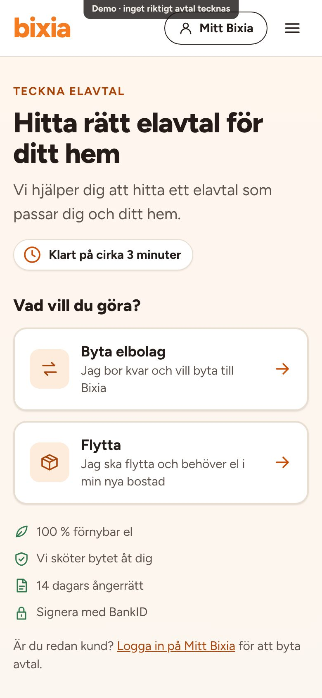
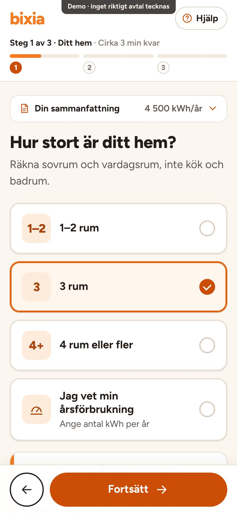
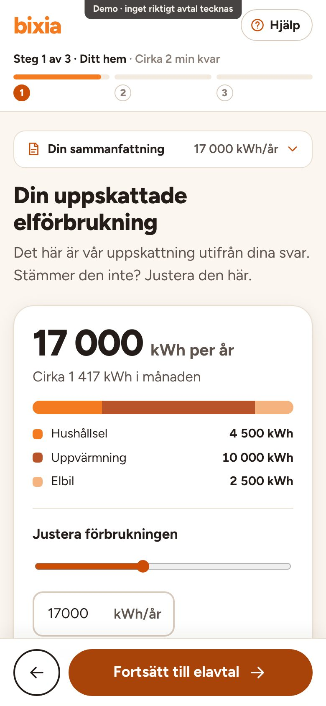
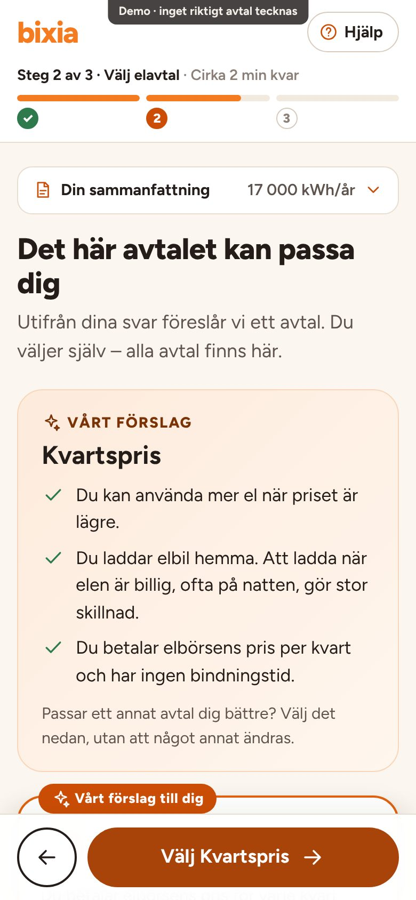
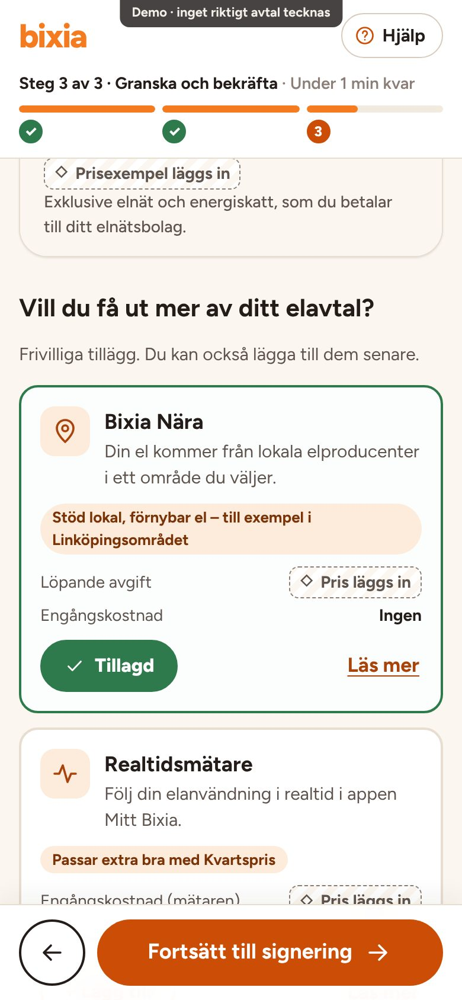
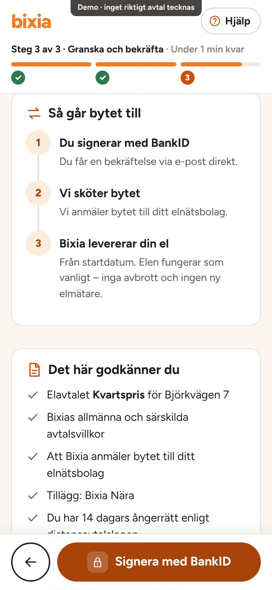
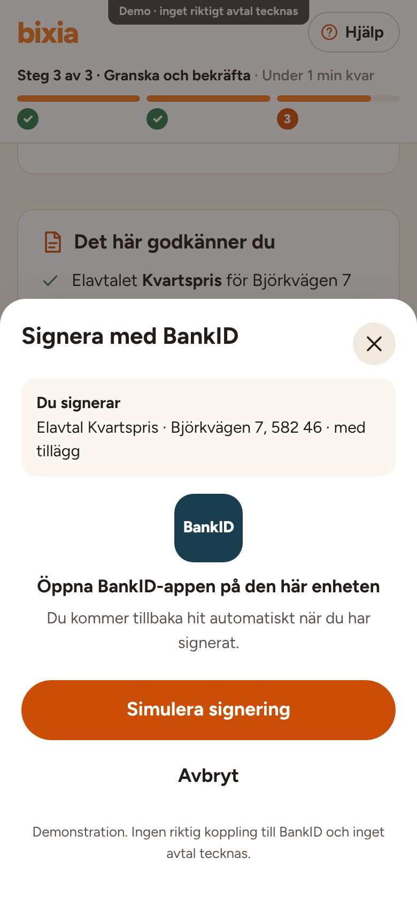
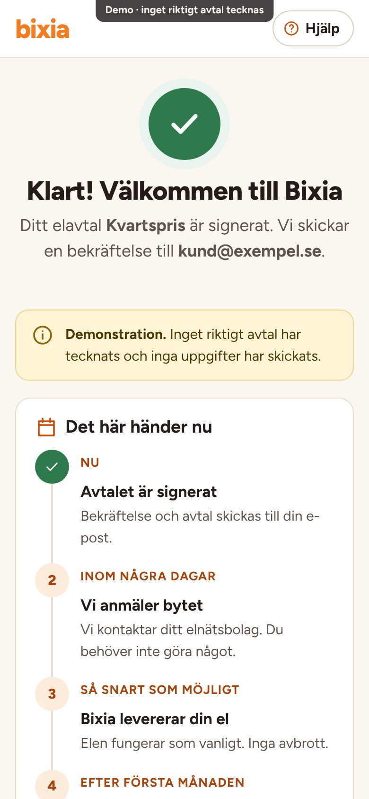
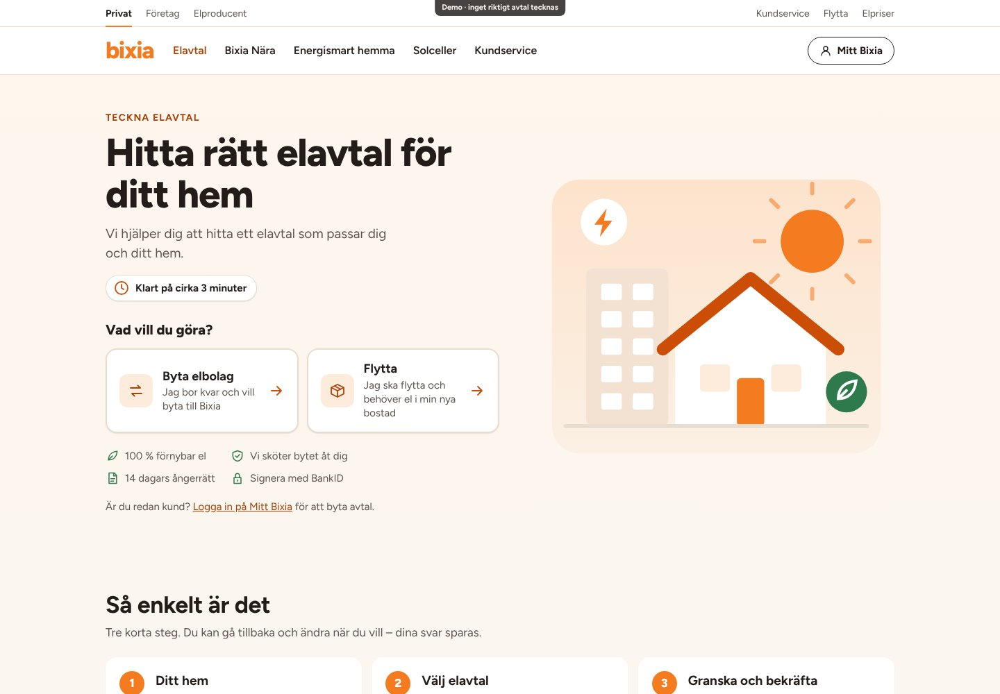
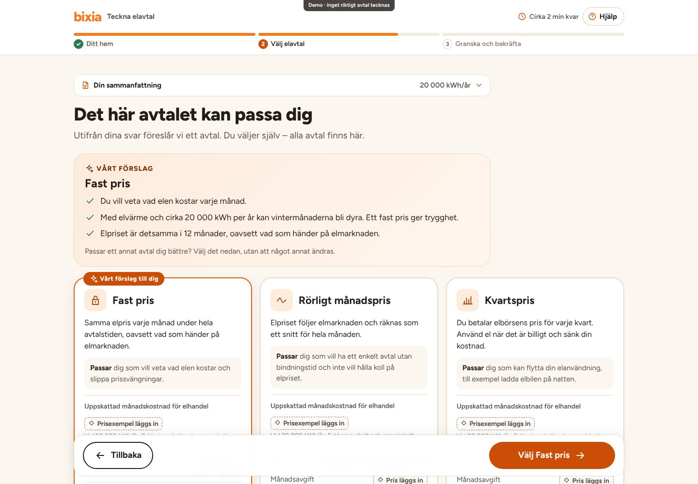
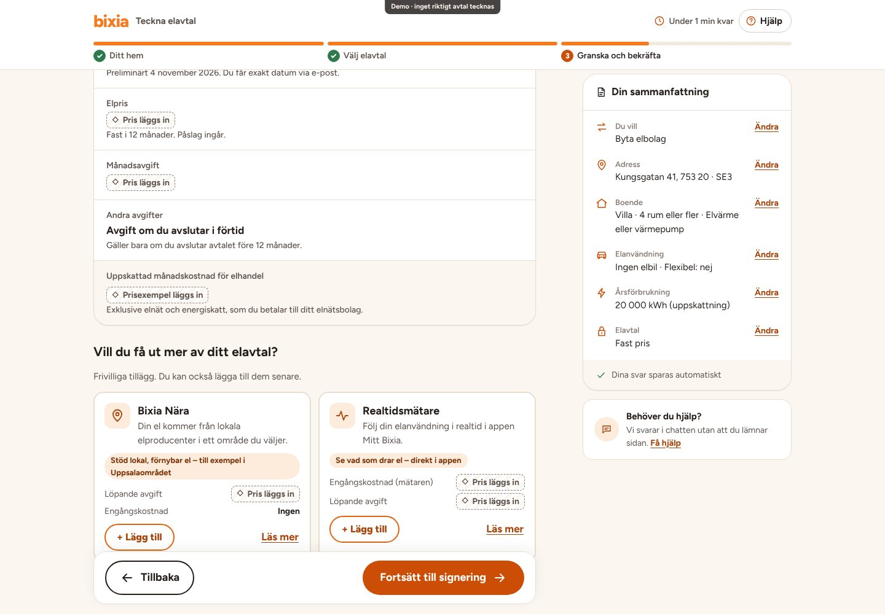
Principerna är lånade – inte den grafiska designen. Allt är utformat i Bixias eget uttryck. Slå på ”UX-anteckningar” i prototypen för att se idéerna i varje vy.
| Inspiration | UX-idé | Så används den i PoC:n | Var |
|---|---|---|---|
| E.ON Next | Postnummer tidigt, stora klickbara svar, förbrukning från antal rum, egen årsförbrukning, frågor om elbil och flexibilitet, tydlig uppdatering av uppskattningen. | En fråga per vy med stora kort. Uppskattningen i kWh visas direkt och visar vad uppvärmning och elbil lägger till. ”Jag vet min årsförbrukning” hoppar över uppskattningen. | Steg 1 |
| Octopus | Snabb väg från adress till pris, få inledande frågor, personliga alternativ, tydligt leverantörsbyte, trygghet. | Startvalet är själva knappen in i flödet. Inget anläggnings-ID behövs. ”Så går bytet till” före signering och ”Det här händer nu” efteråt. | Start, steg 3 |
| Vattenfall | Tydligt val mellan flytt och byte, bostadsuppgifter som grund, anpassning efter situation. | Flytt ger frågan om inflyttningsdatum och en egen beskrivning av vad som händer. Byte ger val av startdatum och uppsägning av gammalt avtal. Uppvärmningsfrågan visas bara för villa och radhus. | Steg 1, 3 |
| Fortum | Avtalsassistent, hjälp att välja avtalsform, tydliga jämförelser. | ”Vad är viktigast för dig?” ger ”Det här avtalet kan passa dig” med en motivering byggd på kundens egna svar. Alla tre avtal visas sida vid sida och kan väljas fritt. | Steg 2 |
| Tibber/Greenely | Enkel självservice, tydlig bindningstid, förtroendeskapande. | Bindningstid, uppsägningstid och avgifter på samma plats på varje kort. Allt går att ändra från sammanfattningen. Hjälp utan att lämna flödet. | Steg 2, 3 |
| Bixia | Egen design, tonalitet och tilläggstjänster. | Orange, varma ljusa ytor, rundade kort och knappar. Bixia Nära och realtidsmätare integrerade på granskningssidan, anpassade efter kundens svar. | Hela flödet |
| Kundens svar | Förslag |
|---|---|
| Vill veta vad elen kostar | Fast pris |
| Vill spara genom att styra sin el | Kvartspris |
| Vill ha ett enkelt avtal utan bindning | Rörligt månadspris |
| Hoppar över – kan använda mer el när priset är lägre | Kvartspris |
| Hoppar över – elvärme och minst 10 000 kWh/år | Fast pris |
| Hoppar över – övriga | Rörligt månadspris |
| 1–2 rum | 3 rum | 4+ rum | |
|---|---|---|---|
| Lägenhet | 1 500 | 2 000 | 2 800 |
| Radhus | 3 000 | 4 000 | 5 000 |
| Villa | 3 500 | 4 500 | 5 500 |
| + elvärme, radhus | 4 000 | 6 000 | 8 000 |
| + elvärme, villa | 6 500 | 10 000 | 14 500 |
| + elbil | 2 500 (cirka 1 250 mil per år) | ||
Kalibrerade mot Energimarknadsinspektionens typkunder: lägenhet 2 000, villa 5 000 och villa med elvärme 20 000 kWh/år. Ska verifieras.
Bixias webbplats gick inte att läsa direkt när PoC:n byggdes. Uppgifterna nedan kommer från sökresultat som återger Bixias villkor och ska stämmas av mot källan. Priserna fylls i på ett ställe, PRISER i prototyp.html, och då räknas månadskostnaden ut automatiskt.
| Uppgift | I PoC:n | Status |
|---|---|---|
| Månadsavgift och påslag, alla avtal | Platshållare | Pris läggs in |
| Fast elpris och prisexempel för månadskostnad | Platshållare | Pris läggs in |
| Avgift vid förtida uppsägning av Fast pris | Platshållare | Belopp läggs in |
| Rörligt månadspris och Kvartspris: ingen bindningstid, 14 dagars uppsägningstid | Visas | Verifieras |
| Fast pris: 12 månader, övergår till Rörligt pris om kunden inte väljer nytt | Visas | Verifieras |
| Kvartspris kräver kvartsmätning | Visas | Verifieras |
| 100 % förnybar el i alla avtal | Visas på startsidan | Verifieras |
| Bixia Nära: pris, ingen bindningstid, val av område | Pris som platshållare | Verifieras |
| Realtidsmätare: engångs- och månadspris, HAN-port, wifi 2,4 GHz, app Mitt Bixia | Pris som platshållare | Verifieras |
| Bixia säger upp kundens gamla avtal | Valfri ruta | Process verifieras |
| Preliminärt startdatum (idag + 14 dagar) | Exempel | Verifieras |
| Elområde från postnummer | Grov mappning för demo | Ersätts med adressuppslag |
| 14 dagars ångerrätt enligt distansavtalslagen | Visas | Lagstadgat |
| ”Klart på cirka 3 minuter” | Visas | Mäts i användartest |
| Logotyp, typsnitt och exakta färgkoder | Närliggande ersättare | Byts mot grafisk profil |
| Kundservicens telefonnummer och öppettider | Platshållare | Läggs in |
5–6 personer per grupp: hyresgäst i lägenhet, villaägare med elvärme, någon som ska flytta och digitalt ovana kunder (till exempel 65+). Använd testläget, som döljer demoverktygen.
1) Du ska flytta till ett radhus – teckna el. 2) Vilket avtal har bindningstid? 3) Lägg till Bixia Nära och ta bort det igen. 4) Ändra din förbrukning till 12 000 kWh. 5) Berätta vad som händer nu.
Andel som slutför, tid jämfört med ”cirka 3 minuter”, antal gånger hjälpen öppnas, om de hade ringt, och om de kan förklara vilket avtal de valt, vad det kostar och vad som händer sedan.
Förstås skillnaden mellan Rörligt månadspris och Kvartspris? Känns förslaget trovärdigt? Upplevs tilläggen som hjälp eller påtryckning? Saknas något före signering?